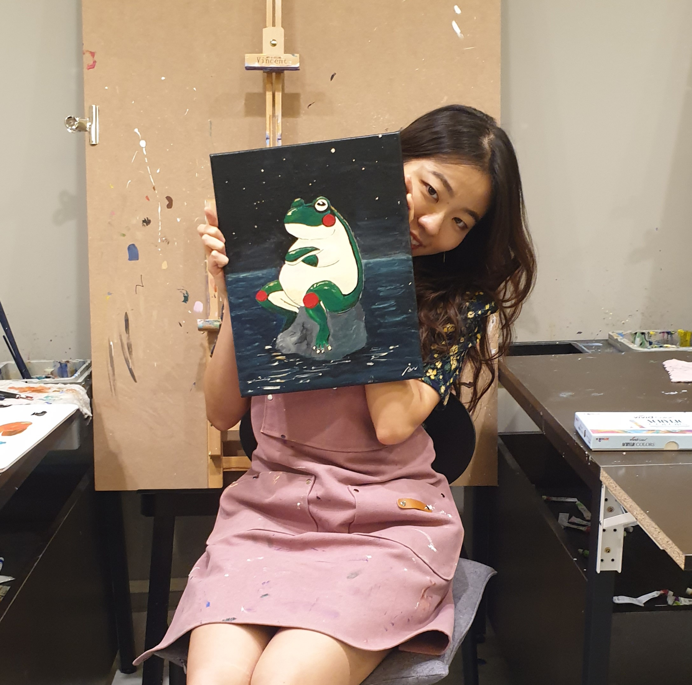

|  | Jooyeon Geem (김주연) Ph. D. Astronomy program Seoul National University
|
Hello, I am Jooyeon Geem, a Ph. D. student from Seoul National University (SNU) and my advisor is Prof. Masateru Ishiguro.
I am interested in the small bodies in the solar system, asteroids, and especially the hydrated asteroids. I am also interested in the techniques which are 'Polarimetry' and 'Spectroscopy'.
| Ph.D. | Astronomy | Seoul National University | 2018~ |
|---|---|---|---|
| B.S. | Astronomy & Space Science | Kyunghee University | 2012~2017 |
| E.S. | Physics | University of Oslo | 2016 |